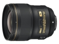

器材库 > 35mm画幅AF定焦镜头 > AF-S 28/1.4E ED

详细规格
镜头类型
广角镜头
发布日期
2017-05-31
焦距
28mm
最大光圈
f/1.4
最小光圈
f/16
视角（对角）
75°
镜头结构
14片/11组
非球面镜片
3片
低/超低色散镜片
2片
光圈叶片
9片
最近对焦距离
28cm
最大放大倍率
0.17倍
驱动马达
SWM（宁静波动马达）
滤镜口径
77mm
镜头卡口
Nikon F
防抖
否
颜色
黑色
尺寸
83×100.5mm
重量
645g
附件
LC-77 77mm搭扣式镜头前盖，LF-4镜头后盖，HB-83卡口式遮光罩，CL-1118镜头套
Circulation2018-04-07 21:254.67 分
操作性 5.00耐用性 4.50性价比 4.00解像力 5.00色彩还原 5.00机械结构 4.50
cunana2018-02-06 21:424.5 分
操作性 5.00耐用性 5.00性价比 3.00解像力 4.50色彩还原 4.50机械结构 5.00
产品图 / 样片
AF-S 28/1.4E ED
评测 / 相关文章
- 详细内容 （存档）
- 致敬经典 尼康AF-S 28/1.4E ED评测 （存档）
- ［试用］尼康AF-S28/1.4E实拍样张 （存档）
- ［资讯］延续经典 尼康AF-S 28/1.4E ED外观图赏 （存档）
- ［资讯］尼康AF-S 28/1.4E ED镜头样片欣赏 （存档）